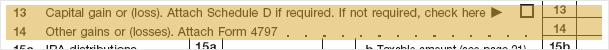

Capital Gains
 The information in the capital gain section reflects sales of assets. The important pieces of information in this section are reported on Schedule D, a copy of which can be viewed by clicking here.
In reviewing this schedule, you should be more concerned with why the assets were sold rather than what was sold or when the sale occurred. In particular, you can answer these two questions by examining Schedule D.
Click the icon next to each question to see the answer.
How long were assets held prior to sale?
Answer: A large volume of short-term sales could indicate an aggressive investment posture. They could also indicate excessive trading on the part of an investment manager. You might further explore this with the client by asking, "How has your advisor concluded it is in your best interest to have a short-term investment strategy?"
Was there a large liquidity event in the client's life?
Answer: For example, you may see that the client sold a business or that a large holding was liquidated. These events should prompt further inquiry with the client, which may reveal that the client may have additional investment needs regarding the proceeds from the sale.
Questions that you might ask the client to gain further clarification include:
Click the icon to view example questions.
Effective Questions
What was the motivating factor for the sale?
Were the sales part of a structured plan?
Did the client authorize the sales or did a financial consultant have discretion in the account?
Was the portfolio being rebalanced or was the client reducing a concentrated stock position?
These questions should lead to a discussion about Financial Planning and proper use of cash in light of goals. It could also lead very nicely into a discussion about asset choice, assumption of risk and general investment education.
A good question to get this discussion going is, "How does your advisor determine when it is appropriate to sell a security?" Chances are the client will not know the answer, which opens the door for you to position your approach.